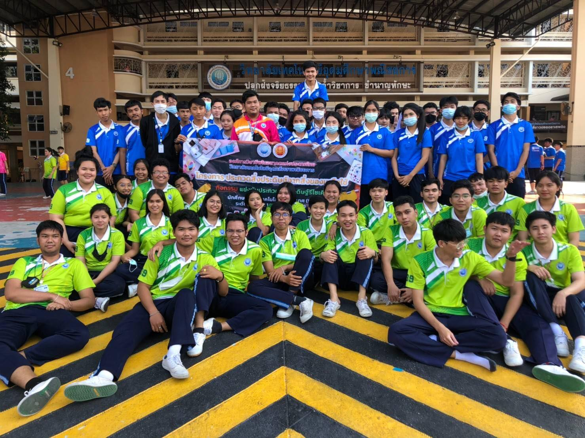
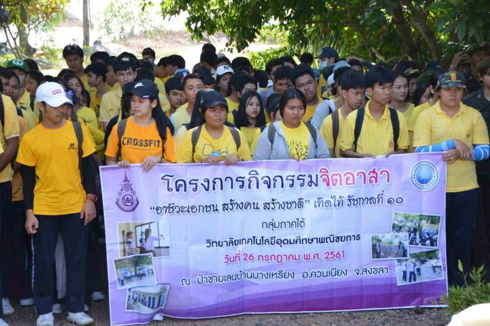
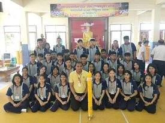
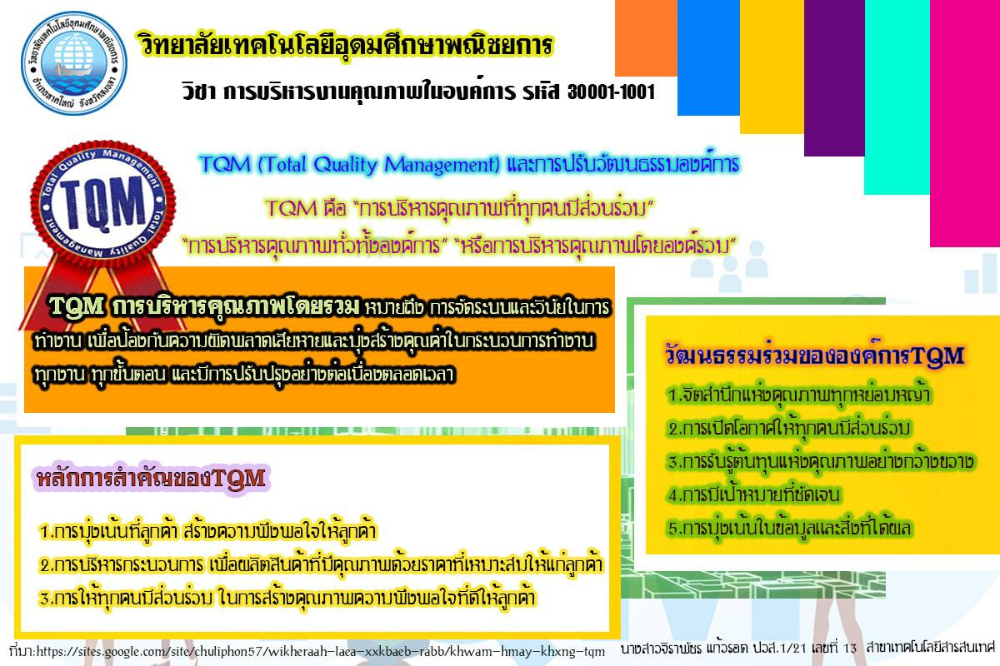

W e l c o m e
P o r t f o l i o
Jiraphat Keawrod
จิราพัชร แก้วรอด

Jiraphat Keawrod
จิราพัชร แก้วรอด
จิราพัชร แก้วรอด ชื่อเล่น ก้อย
เกิดวันจันทร์ ที่19 เดือนธันวาคม พ.ศ.2543
ที่อยู่: บ้านเลขที่4 หมู่13 ตำบลกำเเพงเพชร อำเภอรัตภูมิ จังหวัดสงขลา 90180
ข้อมูลการติดต่อ
เบอร์โทรศัพท์ 095-856-4402
Facebook: เกี่ยว ก้อย
Line: 095-856-4402
Instragram: jiraphat_keawrod
Gmail: Jiraphat1912@gmail.com
สิ่งที่ชื่นชอบ
สัตว์ที่ชอบ: เเมวเเละหมา
สีที่ชอบ: สีเหลือง
อาหารที่ชอบ: ข้าวผัด,ต้มยำ,ส้มตำปลาร้า,ข้าวกระเพรา,ไข่เจียวหมูสับกุ้งสับ
น้ำที่ชอบ: น้ำผลไม้เเละน้ำอัดลม
แนวเพลงที่ชื่นชอบ: ชอบเพลงเเนวรักๆฟังสบายๆ
เเนวซีรีย์ที่ชื่นชอบ: ชอบดูซีรีย์เกาหลี
เวลาว่างชอบทำอะไร: ชอบฟังเพลง
องค์การวิชาชีพ
จิตอาสาปลูกป่าชายเลน
เวียนเทียน
ชิ้นงานที่ 1
ชิ้งงานที่ 2
ชิ้งงานที่ 3